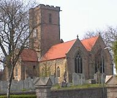

À Portinfé,
Saint Ou.
Jeudi au sé.
Moussieu l'Editeu,
Sus un sens ch'est d'mauvaises nouvelles que notre Baillyi résigne définitivement dans tchiques jours. Il a bein méthité san r'pos, et chein que toute l'Ile li souhaite à ch'teu ch'est la bouonne santé, tchi l'permettra de joui d'ses honneurs pour la période qu'la Providence li accordétha de vivre ocquo sûs la térre. Après tout, i' n'est pas chein qu'nou-s-appèle un viellard, pas d'un bieau but.
Je n'm'en vais pas dithe tch'i' n'a pas yeu ses d'fauts, car i' n'y a pas un homme vivant tch'est parfait. Dans l's Etats, par exemplye, j'ai souvent cru tch'i'n'tait pas ferme assez, et que certains membres 'taient accordés bein trop d'liberté. Sûs chu point-là, lé Baillyi Vèrnon faisait un miyeu Président, et dans san temps les membres 'taient comme souos un maitre d'êcole tchi 'tait juste mais assez sévèthe. L'homme que j'allons perdre à ch'teu a réussi en t'nant tout drait à sa course, sans jamais touôner à drouaite ou à gauche. La chose tch'est certaine ch'est que Jêrri ne r'vêrra pas s'n êgal. La Merrienne mé joint en li souhaitant tout ch'que y'a d'miyeu pour l'restant d'sa vie.
Ch'est hardi pliaisant, Moussieu dé vaie qu'la pâraisse d'Saint Piêrre a décidé d'être représentée à la Batalle dé Flieurs, et l'avis que j'voudrais donner au Clifford Egré ch'est d'ramâsser toutes les belles hardelles tch'i' pouôrra trouvé, et d'les exhiber parmi les flieurs sans trop sûs l'co. J'ai ouï pâslé de deus-trais dans la Grand' Vingtaine et l'Coin Vathin tchi n'dithaient pas nennin.
J'avais ouï dans la s'maine que y'avait des fermiers tchi taient à faithe dêsconer lûs vaques et g'niches et j'n'aimais pas chonna de tout. J'ai prins d's informâtions, et ch'est vrai que chonna s'fait dans deux ou trais fermes du bord de l'Est, mais que l'nombre des bêtes n'est pas considéthablye, et que n'y a autchun dangi que chonna d'veindra général. Les fermiers concernés sont des gens tchi n'montrent pas ès "shows", car i' n'y a pas un seul fermyi tch'aime ses bêtes tchi voudrait les défidjuthé d'la sorte.
La Merrienne fut bein intérêssie d'lièthe dans la gâzette tch'ils avaient trouvé un nouvieau Recteu à St. Martin. Ou s'mint à en pâsler hier au sé.
"Ch'est un Angliais," ou qu'menchit. "Tchi dommage que nou n'peut pas trouver d'bouons Jêrriais, comme nou-s-avait aut'fais. Après tout, avec les salaithes que nou lûs paie à ch'teu ch'n'est pas une mauvaise djobbe. Ichîn à Saint Ou j'sommes bein chanceux d'aver Moussieu Richardson un vrai Jêrriais et un homme que tout l'monde respectent. Tchèsqu'y reste dans l's autres pâraisses de Campagne? Pas grand'chose et y'a pûs d'bancs vièdes dans nos lieux d'tchulte que jamais. Quand j'vêrrai lé Bram, j'li donn'nais en avis d'donner tchique sorte d'êducation à san deuxième et d'en faithe un Recteu. Sûs chu point-là Ph'lip j'entends que Moussieu Helleur a définitivement décidé de tchitter Saint Louothains, et de s'mettre maitre d'êcole en Ville."
"Chonna n'm'êtonne pas," j'li dis. "Saint Louothains n'accorde pas avec ses Recteurs et, franchement, Merrienne, je n'sais pas pourtchi tch'ils en ont du tout."
"I' sont forchis d'aver un Recteur par la louai," ou dit "et étout de garder l'probytaithe en ordre. Pas êtonnant que Moussieu Helleur ne s'trouvait pas à s'n aise dans chutte grande baraque tch'est là à ch'teu."

"Quand ou fut bâtie," j'li dis, "un Recteu criyait que ch'tait san d'vé de s'mathier et d'aver un fliantchet d'mousses, mais les Recteurs d'agniet en ont perdu l'habitude, ou n'savent pas comment s'prendre. A Saint Piêrre ils ont vendu lé vier probytaithe et, avec les sous, en ont bâti un nouvé, bein pûs p'tit mais, étout, pûs conv'nablye. La même chose à Saint Sauveux ouèsque lé Canon Norman est à louogi à la Crouaix d'Bouais en attendant que l'nouvieau probytaithe s'sait prêt. Mais à Sainte Mathie, ouèsque y'a un nouvieau Recteur, ils éthont à dêpenser un tas d'sous d'vant tch'i' s'saient satisfaits avec lûs probytaithe. Nou m'dis que y'a hardi pûs d'monde à la chapelle Béthlehem qu'à l'églyise."
"Y'a tréjous yeu pûs d'Méthodistes que d'Anglyicans dans chutte pâraisse-là," ou dit. "Pour bein d's années l'églyise n'a pas yeu d'congrégation pour dithe."
"Laissons les Recteurs pour à ch'teu, Merrienne," j'li dis, "et considéthons tchiquechose bein pûs important. As-tu liut dans la gâzette à ces sé chein qu'chu Conseillyi Djèrnésiais a dit ès jeunes fermiers?"
"Oui," ou raiponnit, "mais d'vant aller pûs lyien, Ph'lip, tchèsque ch'est qu'un Conseillyi?"
"Ch'est comme un Senateur en Jêrri," j'li dis, "et ch't'ichin est un homme d'la pûs grande importance en Djèrnézi. Si nos jeunes fermiers prennent attention à chein tch'i' lûs a dit et suivent ses consells nou vêrra de grands changements. A qu'menchi la preunmiée chose à faithe ch'est d'abandonner la vielle idée dé chatchun pour sé et de s'uni ensemblye et d'rester d'même."
La Merrienne qu'menchit par châtchi la tête, mais après tchiques instants de reflection ou dit qu'nos jeunes fermiers 'taient bein pûs intélligents qu'la mâjorité d'lûs pèthes et qu'lûs idées 'taient pûs progressives. "J'avons veu pûs d'un mithaclye dans l'couothant d'notre longue vie, Ph'lip," ou s'fit, "et pourtchi pas un autre à ch'teu. Ch'est certain que l'système d'à ch'teu n'peut pas faithe et i' faut nos fier sûs les jeunes fermiers d'faithe des changements accordâmment."
"Vèthe ma vielle," j'li dis, "et pour les encouothagi, j'crais que j'pouôrraimes bèthe deux-d'gouts à lûs santé."
Mais, hélas, Moussieu, la boutelle était viède.
Ph'lip
1962
Viyiz étout: